|
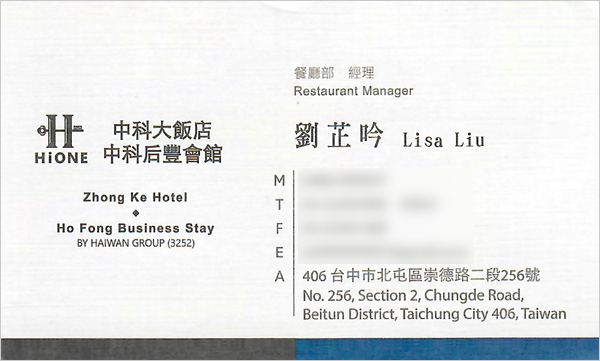 Lisa's Postcards These are the postcards that the Zhong Ke Hotel's restaurant manager Lisa (劉芷吟) made herself. Besides being the restaurant manager, she's also an artist. She gave them to Mei-O as a gift of friendship, having known us since we first began staying at the hotel in 2013. 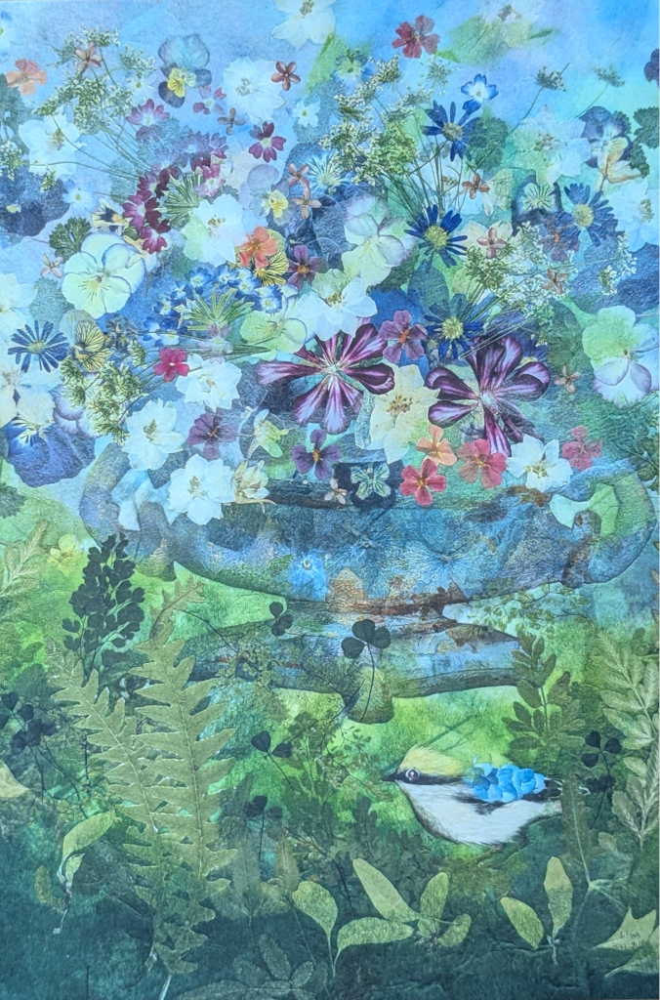 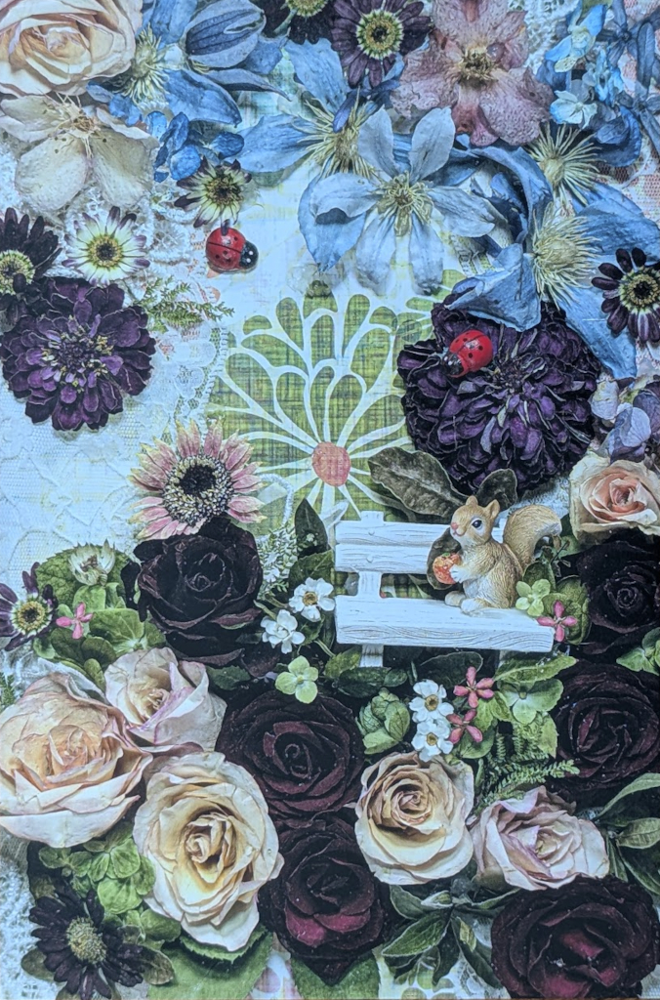 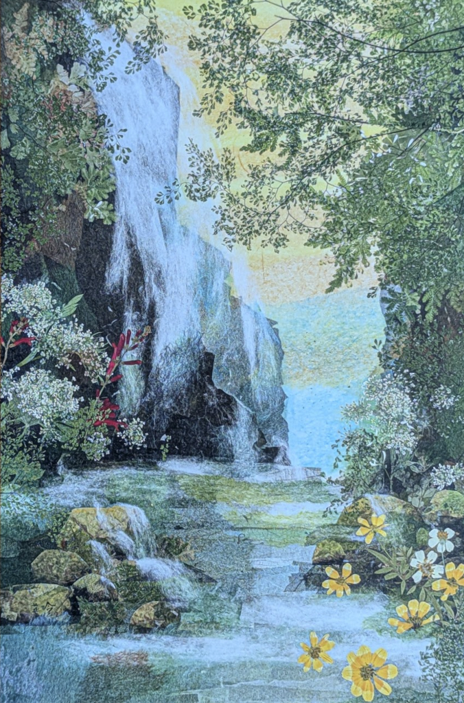 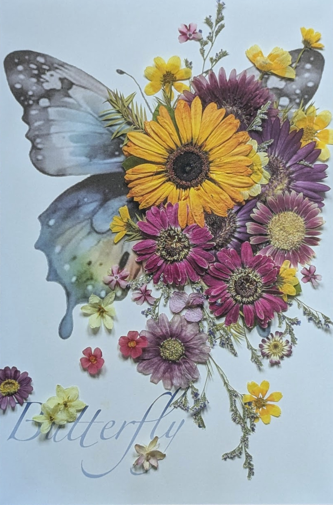 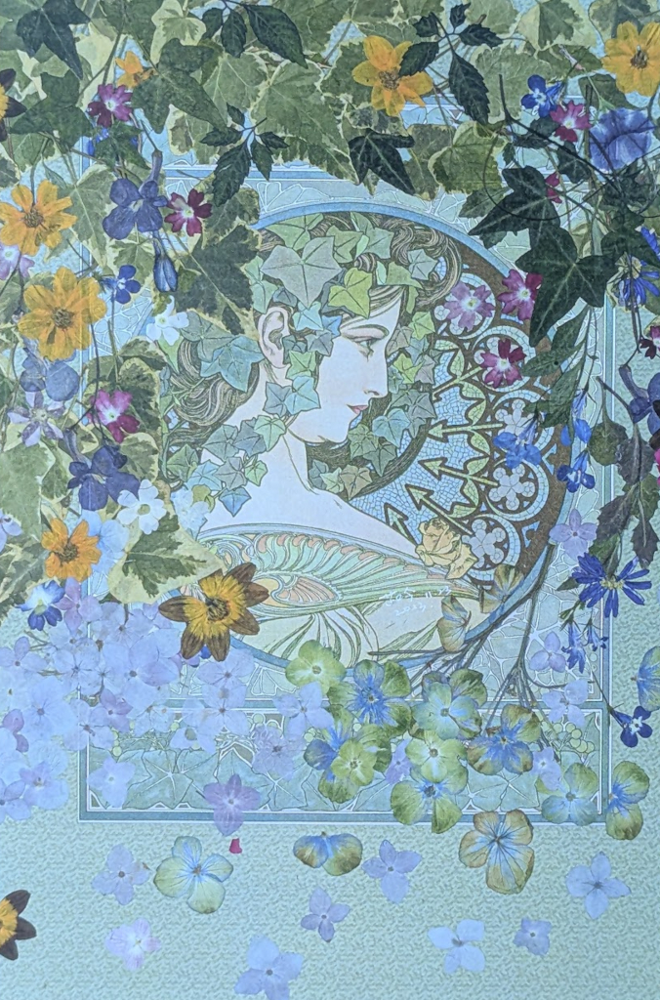 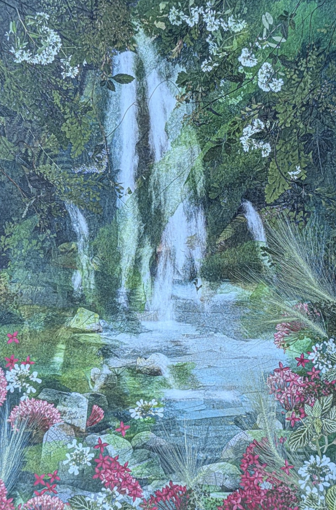 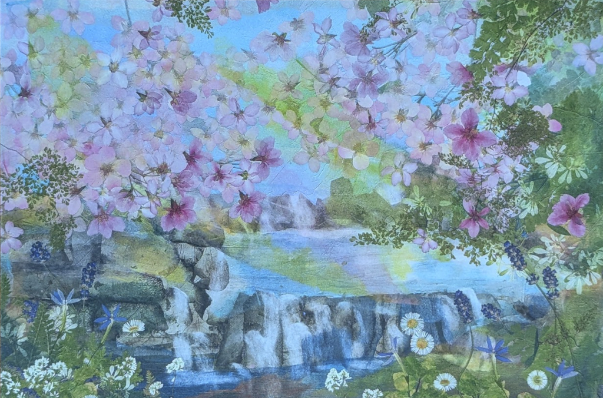 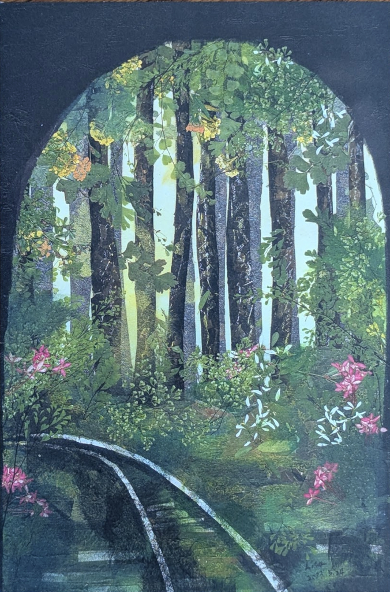 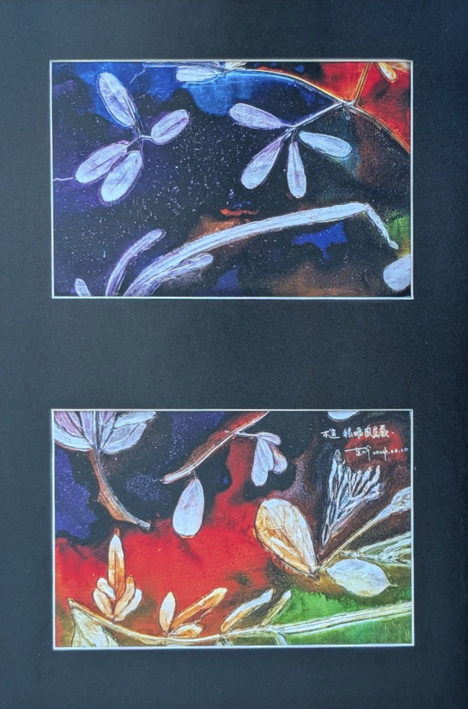 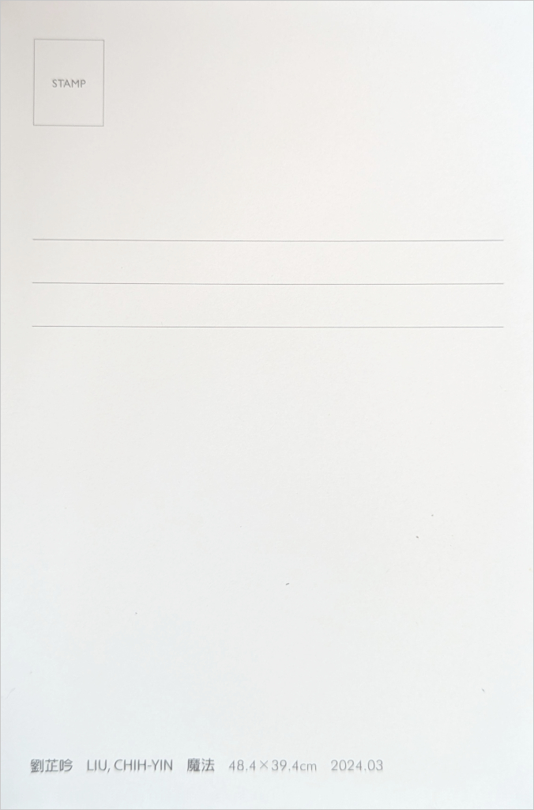 |